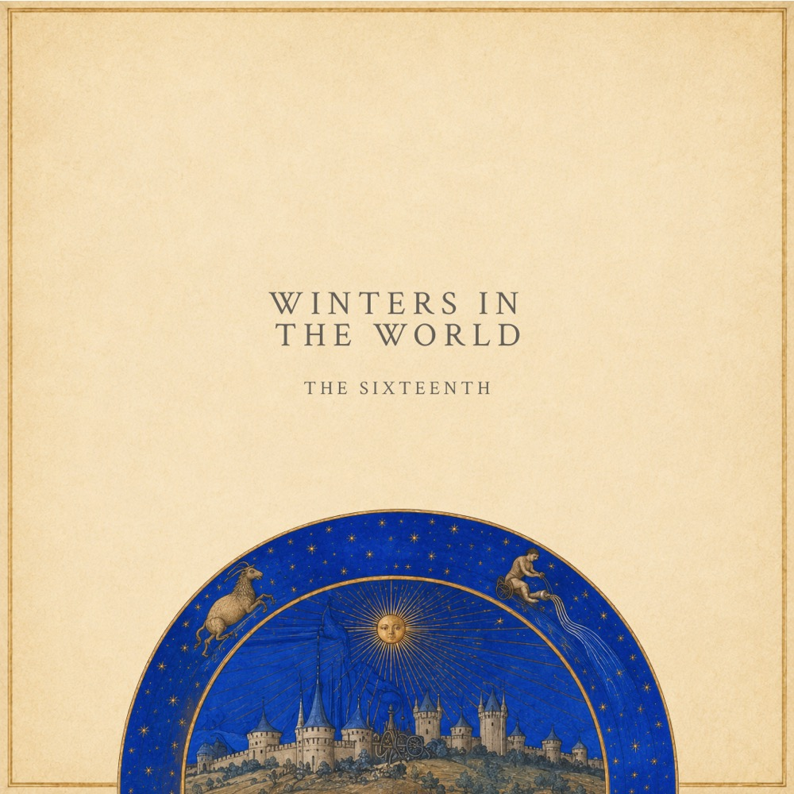

The Sixteenth

Winters in the World
11 July 2026
★★★★★ "…a mesh of organic and digital, a mix of old world and new. Like they've captured the heart and soul of a live funk performance within the confines of a constructed reality…"
"…the spellbinding opener of the second album, 'The Mountain' — the brooding phrases and soundscapes of the strings meet dubby, metallic drums, and then the mood transforms into metaphysical modern classical jazz and spacey IDM/glitch beats…"
"…a stunning collision of traditional musical disciplines with forward thinking structures and sound design, perfectly distilling The Sixteenth's wild creativity…"
"…evokes cinematic, environmental and neoclassicist atmospheres, with retrofuturistic touches that transport us to an imaginary future…"